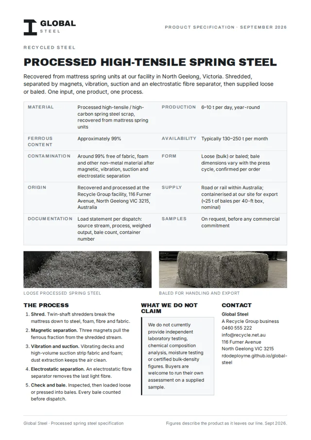
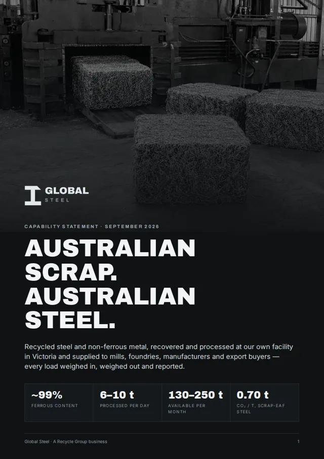
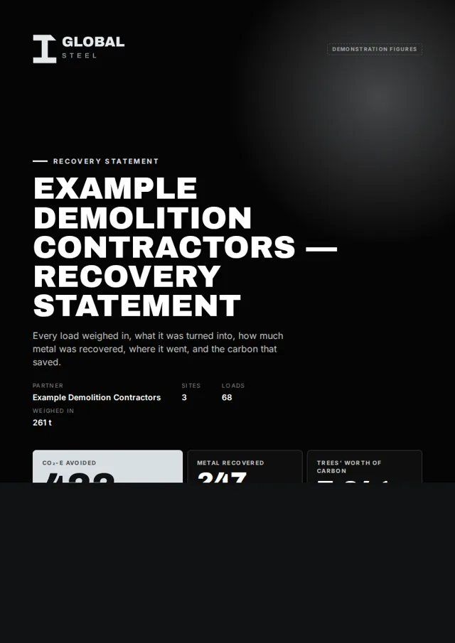
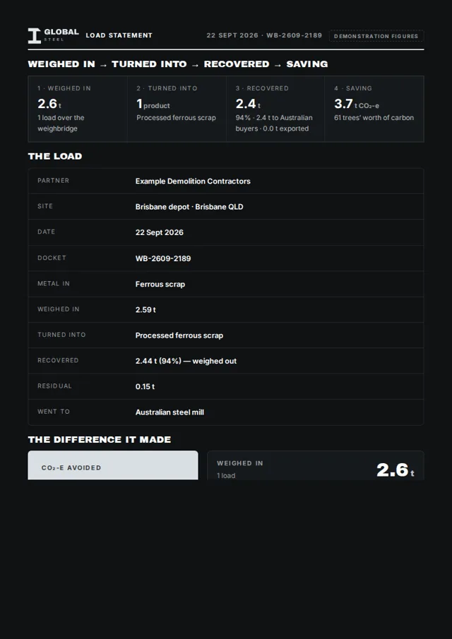
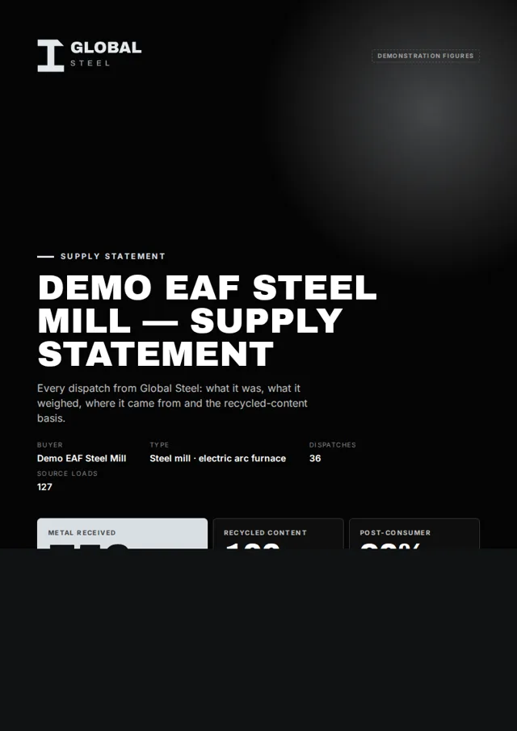
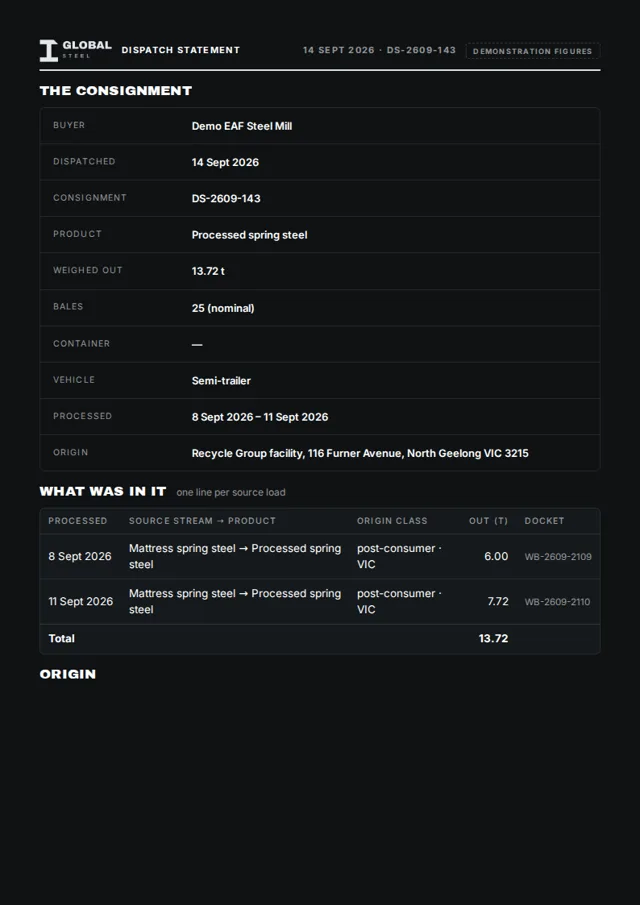

Downloads
The documents buyers ask for
A one-page product specification, a five-page capability statement and four sample statements from Global Steel Connect — two for partners who send metal, two for buyers who receive it. Every figure in them is the same figure on this site, with the same caveats.

Processed spring steel specification Material, ferrous content, contamination, form, availability, supply and documentation on one A4 page — plus what we do not claim. PDF · 1 page · 0.6 MB
Capability statement Who we are, the plant, what we supply and to whom, how every load is recorded, the environmental saving and the recycled-rebar roadmap. PDF · 5 pages · 1.9 MB
Sample recovery statement What a partner receives for a period: loads, weight in, what it became, weight recovered and the CO₂-e avoided. Demonstration figures. PDF · from Global Steel Connect
Sample load statement One page for one load, for the partner who sent it: weighed in, turned into, recovered, where it went and the saving. Demonstration figures. PDF · from Global Steel Connect
Sample supply statement What a buyer receives for a period: every dispatch, tonnes by product and by origin class, and the recycled-content basis in words. Demonstration figures. PDF · from the buyer portal
Sample dispatch statement What travels with a consignment: product, weighed output, bale count, container number, source loads and origin class. Demonstration figures. PDF · from the buyer portalThe sample statements are generated by the portal from demonstration data. Real statements carry the organisation's own loads or dispatches and are issued by Global Steel; partners and buyers read and download, they do not edit. How Global Steel Connect works.
Also useful
Before you download
Processed spring steel
The product behind the specification: ~99% ferrous, 130–250 t a month, loose or baled.
Read the page →How loads are recorded
Weight in, what it was turned into, weight out, the saving. The four numbers on every statement.
Traceability →How the saving is worked out
Recovered tonnes × a published recycling credit per metal, with the sources named.
Environmental impact →Need something that is not here?
Certificates, EPA registration, insurances and site documentation are supplied with proposals. Ask and we will send what we hold.